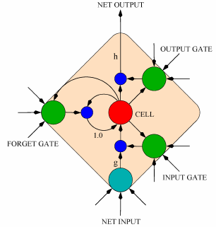
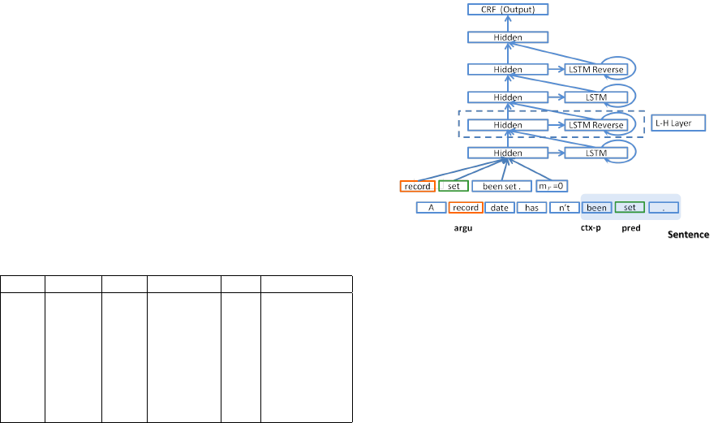
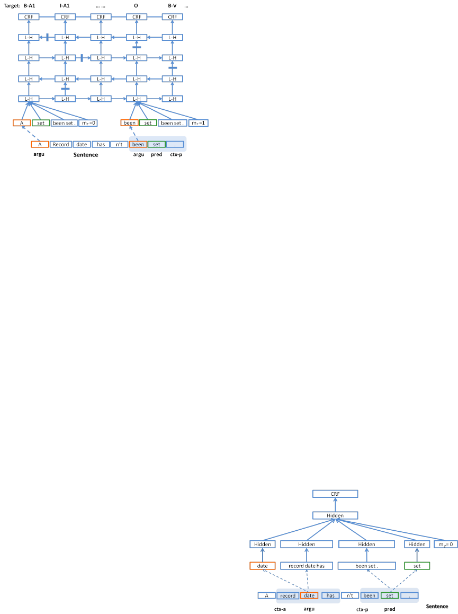
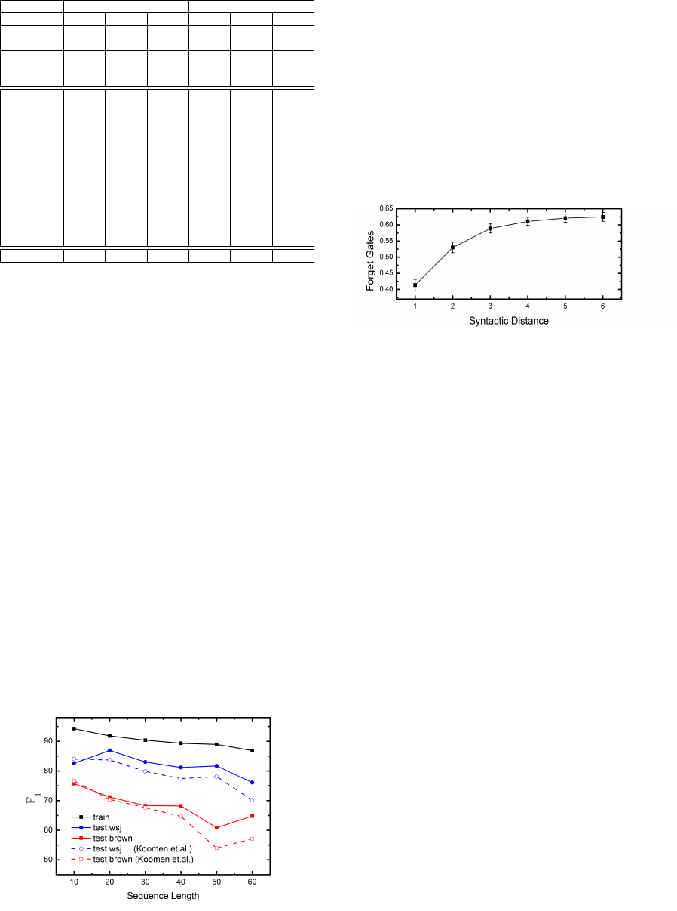
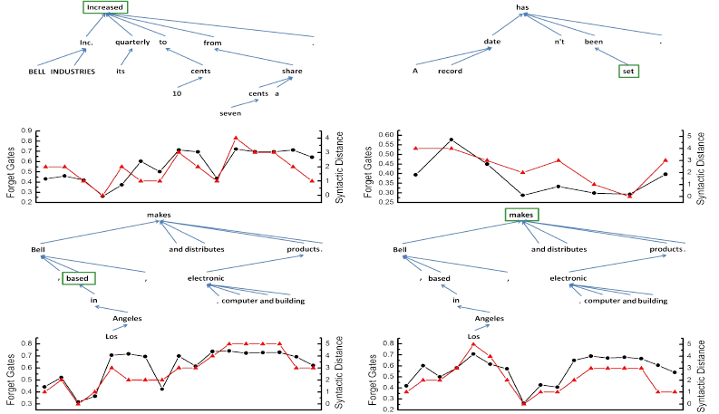

Proceedings of the 53rd Annual Meeting of the Association for Computational Linguistics
and the 7th International Joint Conference on Natural Language Processing, pages 1127–1137,
Beijing, China, July 26-31, 2015.
c
2015 Association for Computational Linguistics
End-to-end Learning of Semantic Role Labeling Using Recurrent Neural
Networks
Jie Zhou and Wei Xu
Baidu Research
{zhoujie01,wei.xu}@baidu.com
Abstract
Semantic role labeling (SRL) is one of the
basic natural language processing (NLP)
problems. To this date, most of the suc-
cessful SRL systems were built on top of
some form of parsing results (Koomen et
al., 2005; Palmer et al., 2010; Pradhan et
al., 2013), where pre-defined feature tem-
plates over the syntactic structure are used.
The attempts of building an end-to-end
SRL learning system without using pars-
ing were less successful (Collobert et al.,
2011). In this work, we propose to use
deep bi-directional recurrent network as an
end-to-end system for SRL. We take on-
ly original text information as input fea-
ture, without using any syntactic knowl-
edge. The proposed algorithm for seman-
tic role labeling was mainly evaluated on
CoNLL-2005 shared task and achieved F
1
score of 81.07. This result outperforms
the previous state-of-the-art system from
the combination of different parsing trees
or models. We also obtained the same
conclusion with F
1
= 81.27 on CoNLL-
2012 shared task. As a result of simplicity,
our model is also computationally efficient
that the parsing speed is 6.7k tokens per
second. Our analysis shows that our model
is better at handling longer sentences than
traditional models. And the latent vari-
ables of our model implicitly capture the
syntactic structure of a sentence.
1 Introduction
Semantic role labeling (SRL) is a form of shal-
low semantic parsing whose goal is to discover
the predicate-argument structure of each predicate
in a given input sentence. Given a sentence, for
each target verb (predicate) all the constituents in
the sentence which fill a semantic role of the verb
have to be recognized. Typical semantic argu-
ments include Agent, Patient, Instrument, etc., and
also adjuncts such as Locative, Temporal, Man-
ner, Cause, etc.. SRL is useful as an intermedi-
ate step in a wide range of natural language pro-
cessing (NLP) tasks, such as information extrac-
tion (Bastianelli et al., 2013), automatic document
categorization (Persson et al., 2009) and question-
answering (Dan and Lapata, 2007; Surdeanu et al.,
2003; Moschitti et al., 2003).
SRL is considered as a supervised machine
learning problem. In traditional methods, linear
classifier such as SVM is often employed to per-
form this task based on features extracted from the
training corpus. Actually, people often treat this
problem as a multi-step classification task. First,
whether an argument is related to the predicate is
determined; next the detail relation type was de-
cided(Palmer et al., 2010).
Syntactic information is considered to play an
essential role in solving this problem (Punyakanok
et al., 2008a). The location of an argument on syn-
tactic tree provides an intermediate tag for improv-
ing the performance. However, building this syn-
tactic tree also introduces the prediction risk in-
evitably. The analysis in (Pradhan et al., 2005)
found that the major source of the incorrect pre-
dictions was the syntactic parser. Combination of
different syntactic parsers was proposed to address
this problem, from both feature level and model
level (Surdeanu et al., 2007; Koomen et al., 2005;
Pradhan et al., 2005).
Besides, feature templates in this classification
task strongly rely on the expert experience. They
need iterative modification after analyzing how the
system performs on development data. When the
corpus and data distribution are changed, or when
people move to another language, the feature tem-
plates have to be re-designed.
To address the above issues, (Collobert et al.,
1127
2011) proposed a unified neural network architec-
ture using word embedding and convolution. They
applied their architecture on four standard NLP
tasks: Part-Of-Speech tagging (POS), chunking
(CHUNK), Named Entity Recognition (NER) and
Semantic Role Labeling (SRL). They were able to
reach the previous state-of-the-art performance on
all these tasks except for SRL. They had to resort
to parsing features in order to make the system
competitive with state-of-the-art performance.
In this work, we propose an end-to-end system
using deep bi-directional long short-term memo-
ry (DB-LSTM) model to address the above dif-
ficulties. We take only original text as the in-
put features, without any intermediate tag such
as syntactic information. The input features are
processed by the following 8 layers of LSTM bi-
directionally. At the top locates the conditional
random field (CRF) model for tag sequence pre-
diction. We achieve the state-of-the-art perfor-
mance of f-score F
1
= 81.07 on CoNLL-2005
shared task and F
1
= 81.27 on CoNLL-2012
shared task. At last, we find the traditional syn-
tactic information can also be inferred from the
learned representations.
2 Related Work
People solve SRL problems in two major ways.
The first one follows the traditional spirit widely
used in NLP basic problems. A linear classifier is
employed with feature templates. Most efforts fo-
cus on how to extract the feature templates that
can best describe the text properties from train-
ing corpus. One of the most important features
is from syntactic parsing, although syntactic pars-
ing is also considered as a difficult problem. Thus
system combination appear to be the general solu-
tion.
In the work of (Pradhan et al., 2005), the syn-
tactic tags are produced by Charniak parser (Char-
niak, 2000; Charniak and Johnson, 2005) and
Collins parser (Collins, 2003) respectively. Based
on this, different systems are built to generate
SRL tags. These SRL tags are used to extend the
original feature templates, along with flat syntactic
chunking results. At last another classifier learns
the final SRL tag from the above results. In their
analysis, the combination of three different syntac-
tic view brings large improvement for the system.
Similarly, Koomen et al. (Koomen et al., 2005)
combined the system in another way. They built
multiple classifiers and then all outputs are com-
bined through an optimization problem. Surdeanu
et al. fully discussed the combination strategy in
(Surdeanu et al., 2007).
Beyond the above traditional methods, the sec-
ond way try to solve this problem without feature
engineering. Collobert et al. (Collobert et al.,
2011) introduced a neural network model consists
of word embedding layer, convolution layers and
CRF layer. This pipeline addressed the data spar-
sity by initializing the model with word embed-
dings which is trained from large unlabeled text
corpus. However, the convolution layer is not the
best way to model long distance dependency since
it only includes words within limited context. So
they processed the whole sequence for each giv-
en pair of argument and predicate. This results in
the computational complexity of O(n
p
L
2
), with L
denoting the sequence length and n
p
the number
of predicate, while the complexity of our model is
linear (O(n
p
L)). Moreover, in order to catch up
with the performance of traditional methods, they
had to incorporate the syntactic features by using
parse trees of Charniak parser (Charniak, 2000)
which still provides the major contribution.
At the inference stage, structural constraints of-
ten lead to improved results (Punyakanok et al.,
2008b). The constraints comes from annotation
conventions of the task and other linguistic consid-
erations. With dynamic programming, (T
¨
ackstr
¨
om
et al., 2015) enhance the inference efficiency fur-
ther. But designation of the constraints depends
much on the linguistic knowledge.
Nevertheless, the attempts of building end-to-
end systems for NLP become popular in recen-
t years. Inspired by the work in computer vi-
sion, people hierarchically organized a window of
words through convolution layers in deep form
to account for the higher level of organization to
solve the document classification task (Kim, 2014;
Zhang and LeCun, 2015). Step further, people
have also achieved success in directly mapping
the sequence to sequence level target as the work
in dependency parsing and machine translation
(Vinyals et al., 2014; Sutskever et al., 2014).
3 Approaches
In this paper, we propose an end-to-end system
based on recurrent topology. Recurrent neural net-
work (RNN) has natural advantage in modeling
sequence problems. The past information is built
1128

up through the recurrent layer when model con-
sumes the sequence word by word as shown in E-
q. 1. x and y are the input and output of the recur-
rent layer with (t) denoting the time step, w
m
f
and
w
m
i
are the matrix from input or recurrent layer to
hidden layer. σ is the activation function. With-
out y
(t−1)
term, the rnn model returns to the feed
forward form.
y
(t)
m
= σ(
X
f
w
m
f
x
(t)
f
+
X
i
w
m
i
y
(t−1)
i
) (1)
However, people often met with two difficulties.
First, information of the current word strongly de-
pends on distant words, rather than its neighbor-
hood. Second, gradient parameters may explode
or vanish especially in processing long sequences
(Bengio et al., 1994). Thus long short-term mem-
ory (LSTM) (Hochreiter and Schmidhuber, 1997)
was proposed to address the above difficulties.
In the following part, we will first give a brief
introduction about the LSTM and then demon-
strate how to build up a network based on LSTM
to solve a typical sequence tagging problem: se-
mantic role labeling.
3.1 Long Short-Term Memory (LSTM)
Long short-term memory (LSTM) (Hochreiter and
Schmidhuber, 1997; Graves et al., 2009) is an
RNN architecture specifically designed to address
the vanishing gradient and exploding gradient
problems. The hidden neural units are replaced
by a number of memory blocks. Each memory
block contains several cells, whose activations are
controlled by three multiplicative gates: the input
gate, forget gate and output gate. With the above
change, the original rnn model is improved to be:
y
(t)
m
= σ(s
(t)
c,m
) · π
(t)
m
(2)
= σ(n
(t)
m
ρ
(t)
m
+ φ
(t)
m
s
(t−1)
c,m
) · π
(t)
m
(3)
Now y is the memory block output. n is equivalent
to the original hidden value y in rnn model. ρ, φ
and π are the input, forget and output gates value.
s
c,m
is state value of cell c in block m and c is fixed
to be 1 and omitted in common work. The compu-
tation of three multiplicative gates comes from in-
put value, recurrent value and cell state value with
different activations σ respectively as shown in the
following and Fig. 1:
n
(t)
m
: σ
n
(
X
f
w
m
f,n
x
(t)
f
+
X
i
w
m
i,n
y
(t−1)
i
) (4)
ρ
(t)
m
: σ
ρ
(
X
f
w
m
f,ρ
x
(t)
f
+
X
i
w
m
i,ρ
y
(t−1)
i
+ w
m
ρ
s
(t−1)
m
)
φ
(t)
m
: σ
φ
(
X
f
w
m
f,φ
x
(t)
f
+
X
i
w
m
i,φ
y
(t−1)
i
+ w
m
φ
s
(t−1)
m
)
π
(t)
m
: σ
π
(
X
f
w
m
f,π
x
(t)
f
+
X
i
w
m
i,π
y
(t−1)
i
+ w
m
π
s
(t)
m
)
Figure 1: LSTM memory block with a single cell.
(Graves et al., 2009)
The effect of the gates is to allow the cells to
store and access information over long periods of
time. When the input gate is closed, the new com-
ing input information will not affect the previous
cell state. Forget gate is used to remove the histor-
ical information stored in the cells. The rest of the
network can access the stored value of a cell only
when its output gate is open.
In language related problems, the structural
knowledge can be extracted out by processing se-
quences both forward and backward so that the
complementary information from the past and the
future can be integrated for inference. Thus bi-
directional LSTM (B-LSTM) containing two hid-
den layers were proposed(Schuster and Paliwal,
1997). Both hidden layers connect to the same in-
put layer and output layer, processing the same se-
quence in two directions respectively (A. Graves,
2013).
In this work, we utilize the bi-directional infor-
mation in another way. First a standard LSTM
processes the sequence in forward direction. The
output of this LSTM layer is taken by the next
1129

LSTM layer as input, processed in reversed di-
rection. These two standard LSTM layers com-
pose a pair of LSTM. Then we stack LSTM layer-
s pair after pair to obtain the deep LSTM model.
We call this topology as deep bi-directional LSTM
(DB-LSTM) network. Our experiments show that
this architecture is critical to achieve good perfor-
mance.
3.2 Pipeline
We process the sequence word by word. Two in-
put features play an essential role in this pipeline:
predicate (pred) and argument (argu), with argu-
ment describing the word under processing. The
output for this pair of words is their semantic role.
If a sequence has n
p
predicates, we will process
this sequence n
p
times.
We also introduce two other features, predicate
context (ctx-p) and region mark (m
r
). Since a s-
ingle predicate word can not exactly describe the
predicate information, especially when the same
words appear more than one times in a sentence.
With the expanded context, the ambiguity can be
largely eliminated. Similarly, we use region mark
m
r
= 1 to denote the argument position if it lo-
cates in the predicate context region, or m
r
= 0
if not. These four simple features are all we need
for our SRL system. In Tab. 1 we give an example
sequence with the labels for each word. We do not
use other types of features such as part of speech
(POS), syntactic parsing, etc..
time argu pred ctx-p m
r
label
1 A set been set . 0 B-A1
2 record set been set . 0 I-A1
3 date set been set . 0 I-A1
4 has set been set . 0 O
5 n’t set been set . 0 B-AM-NEG
6 been set been set . 1 O
7 set set been set . 1 B-V
8 . set been set . 1 O
Table 1: An example sequence with 4 input fea-
tures: argument, predicate, predicate context (con-
text length is 3) , region mark. “IOB” tagging
scheme is used (Collobert et al., 2011).
Because the large number of parameters asso-
ciated with the argument words, similar to (Col-
lobert et al., 2011), the pre-trained word represen-
tations are employed to address the data sparsity
issue. We used a large unlabeled text corpus to
train a neural language model (NLM) (Bengio et
al., 2006; Bengio et al., 2003) and then initial-
ized the argument and predicate word representa-
tions with parameters from the NLM representa-
tions. There are various ways of obtaining good
word representations (Mikolov et al., 2013; Col-
lobert and Weston, 2008; Mnih and Kavukcuoglu,
2013; Yu et al., 2014). A systematic comparison
of them on the task of SRL is beyond the scope of
this work.
The above four features are concatenated to be
the input representation at this time step for the
following LSTM layers. As described in Sec. 3.1,
we use DB-LSTM topology to learn the sequence
knowledge and we build up to 8 layers of DB-
LSTM in our work.
As in traditional methods, we employ CRF
(Lafferty et al., 2001) on top of the network for
the final prediction. It takes the representations
provided by the last LSTM layer as input to model
the strong dependance among adjacent tags.
Figure 2: DB-LSTM network.Shadow part denote
the predicate context within length 1.
The complete model with 4 LSTM layers is il-
lustrated in Fig. 2. At the bottom of the graph lo-
cates the word sequence in Tab. 1. For a given time
step (step 2 as an example), argument and predi-
cate are specified with different color. We use the
shadowed region to denote the predicate contex-
t. The temporal expanded version of the model is
shown in Fig. 3. L-H denotes the LSTM hidden
layer.
We use the stochastic gradient descent (SGD)
algorithm as the training technique for the whole
pipeline (Lecun et al., 1998). For a given se-
quence, we look up the embedding of each word
and process this vector with the following LSTM
layers for the high level representation. After hav-
ing finished the whole sequence, we take the rep-
resentations of all time steps as the input features
1130

Figure 3: Temporal expanded DB-LSTM network.
Bars denote that the connections are blocked by
the closed gates. Shadow part denotes the predi-
cate context.
for CRF to perform the sequence tagging task. The
traditional viterbi decoding is used for inference.
The gradient of the log-likelihood of the tag se-
quence with respect to the input of the CRF is cal-
culated and back-propagated to all the DB-LSTM
layers to get the gradient of the parameters (Col-
lobert et al., 2011).
4 Experiments
We mainly evaluated and analyzed our system on
the commonly used CoNLL-2005 shared task da-
ta set and the conclusions are also validated on
CoNLL-2012 shared task.
4.1 Data set
CoNLL-2005 data set takes section 2-21 of Wall
Street Journal (WSJ) data as training set, and sec-
tion 24 as development set. The test set consist-
s of section 23 of WSJ concatenated with 3 sec-
tions from Brown corpus (Carreras and M
`
arquez,
2005). CoNLL-2012 data set is extracted from
OntoNotes v5.0 corpus. The description and sep-
aration of train, development and test data set can
be found in (Pradhan et al., 2013).
4.2 Word embedding
We trained word embeddings with English
Wikipedia (Ewk) corpus using NLM (Bengio et
al., 2006). The corpus contains 995 million to-
kens. We transformed all the words into their
lowercase and the vocabulary size is 4.9 million.
About 5% words in CoNLL 2005 data set can not
be found in Ewk dictionary and are marked as
<unk>. In all experiments, we use the same word
embedding with dimension 32.
4.3 Network topology
In this part, we will analyze the performance of
two different networks, the CNN and LSTM net-
work. Although at last we find CNN can not pro-
vide the results as good as that from LSTM, the
analysis still help us to gain a deep insight of this
problem. In CNN, we add argument context as
the fifth feature and the other four features are the
same as that used in LSTM. In order to have good
understanding of the contribution from each mod-
eling decision, we started from a simple model and
add more units step by step.
4.3.1 Convolutional neural network
Using CNN to solve SRL problem has been intro-
duced in (Collobert et al., 2011). Since we only
focus on the analysis of features, a simplified ver-
sion is used here.
Our feature set consists of five parts as de-
scribed above. The representation of argument
and predicate can be obtained by looking up the
Emb(Ewk) dictionary. And the representation of
argument context and predicate context can be ob-
tained by concatenating the embedding of each
word in the context. For each of the above four
parts, we add a hidden layer. Then all these four
hidden layers together with region mark are pro-
jected onto the next hidden layer. At last we use a
CRF layer for prediction (See Fig. 4). With above
set up, the computational complexity is O(n
p
L).
Figure 4: CNN Pipeline. Shadow parts denote
the argument context and predicate context respec-
tively
The size of hidden layers connected to argu-
ment or predicate is set to be h
1w
= 32. The size
of the other two hidden layers connected to con-
text embedding is set to be h
1c
= 128 since the
1131

corresponding inputs are larger. To simplify the
parameter setting and results comparison, we use
the same learning rate l = 1 × 10
−3
for each layer
and keep this rate a constant during model train-
ing. The second hidden layer dimension h
2
is also
128. All hidden layer activation function is tanh.
In Tab. 2, it is shown that longer argument
and predicate context result in better performance,
since longer context brings more information. We
observe the same trends in other NLP experiments,
such as NER, POS tagging. The difference is that
we do not need to use the context length up to 11.
This is because most of the useful information for
NER and POS tagging is local respect the label
position, while in SRL there exists long distance
relationship. So in traditional methods for SRL,
syntactic trees are often introduced to account for
such relation. In order to see whether the improve-
ment from CNN-2 to CNN-3 is due to longer con-
text or larger model size, we tested a model CNN-
6 with same context length but more model param-
eters. As we can see from the result of CoNLL-
2005 data set (Tab. 2), larger model does not im-
prove the result.
name h
1c
ctx-a ctx-p m
r
F
1
(dev) F
1
CNN-1 128 1 5 y 41.22 41.24
CNN-2 128 5 5 y 51.83 52.09
CNN-3 128 11 5 y 52.81 53.07
CNN-4 128 11 1 y 49.69 50.70
CNN-5 128 11 5 n 36.40 37.50
CNN-6 256 5 5 y 51.60 51.91
Table 2: F
1
of CNN method on development set
and test set of CoNLL-2005 data set.
Without using region mark (m
r
) feature, the F
1
drops from the 53.07 of CNN-3 to the 37.50 of
CNN-5. Since it is generally believed that words
near the predicate are more likely to be related to
the predicate.
SRL is a typical problem with long distance de-
pendency, while the convolution operation can on-
ly learn the knowledge from the limited neighbor-
hood. This is why we have to introduce long con-
text. However, the language information can not
be expressed just by linearly expanding the con-
text as what we did in CNN pipeline. In order to
better summarize the sequence structure, we turn
to LSTM network.
4.3.2 LSTM network
Here the feature set consists of four parts. Ar-
gument and predicate are necessary parts in this
problem. In recurrent model, argument context
(ctx-a) is no longer needed and we only expand the
predicate context. We also need the region mark
defined in the same way as in CNN. The archi-
tecture has been shown in Fig. 2 and described in
Sec. 3.2.
Since it is difficult to propagate the error from
the top to the bottom layers, we use two learning
rates. At the bottom, i.e. from embeddings to the
first LSTM layer, we use l
b
= 1 × 10
−2
for mod-
el depth d <= 4 and l
b
= 2 × 10
−2
for d > 4.
For the other LSTM layers and CRF layer, we set
learning rate l = l
b
× 10
−3
. We kept all learn-
ing rates constant during training. The model size
can be enlarged by increasing the number of LST-
M layers (d) or the dimension of hidden layers (h).
L2 weight decay in SGD is used for model regu-
larization and we set its strength r
2
= 8 × 10
−4
:
w ← w − l · (g + r
2
· w) (5)
where w denotes the parameter, g the gradient of
the log likelihood of the label with respect to the
parameter.
We started on CoNLL-2005 dataset from a
small model with only one LSTM layer and h =
32. All word embeddings were randomly initial-
ized. Predicate context length was 1. Region
mark is not used. With this model, we obtained
F
1
= 49.44 (Tab. 3), better than that of CNN with-
out using argument context (41.24) or region mark
(37.50). This result suggests that, the recurrent
structure can extract sequential information more
effectively than CNN.
By adding predicate context with length 5, F
1
is improved from 49.44 to 56.85 (Tab. 3). This is
because we only recurrently process the argument
word, so we still need predicate context for more
detail. Further more, F
1
rises to 58.71 with re-
gion mark feature. The reason is the same as we
explained in CNN pipeline.
Next we change the random initialization of
word representation to the pre-trained word rep-
resentation from Emb(Ewk). This representation
is fixed in the training process. F
1
rises to 65.11
(See Tab. 3).
So far, we have shown the effect from each part
of features in LSTM network. The conclusion is
consistent with what we found in CNN network.
Besides, LSTM exhibits better abilities to learn the
sequence structure. Next, we gradually increase
the model size to further enhance the performance.
1132
Emb d ctx-p m
r
h F
1
(dev) F
1
CoNLL-2005 data set
Ran 1 1 n 32 47.88 49.44
Ran 1 5 n 32 54.63 56.85
Ran 1 5 y 32 57.13 58.71
Ewk 1 5 y 32 64.48 65.11
Ewk 2 5 y 32 72.72 72.56
Ewk 4 5 y 32 75.08 75.74
Ewk 6 5 y 32 76.94 78.02
Ewk 8 5 y 32 77.50 78.28
Ewk 8 5 y 64 77.69 79.46
Ewk 8 5 y 128 79.10 80.28
fine tuning
Ewk 8 5 y 128 79.55 81.07
CoNLL-2012 data set
Ewk 8 5 y 128 80.51 80.70
fine tuning
Ewk 8 5 y 128 81.07 81.27
Table 3: F
1
with LSTM method on development
set and test set of CoNLL-2005 data set and
CoNLL-2012 data set. Emb: the type of embed-
ding. d: the number of LSTM layers. ctx-p: pred-
icate context length. m
r
: region mark feature. h:
hidden layer size.
We find that the critical improvement comes
from increasing the depth of LSTM network. Af-
ter adding a reversed LSTM layer, F
1
is improved
from 65.11 to 72.56. And the F
1
of the system
with d = 4, 6, 8 are 75.74, 78.02 and 78.28 re-
spectively. With 6-layer network, we have outper-
formed the CoNLL-2005 shared task winner sys-
tem with F
1
= 77.92 (Koomen et al., 2005). Our
experiment results also show that the further per-
formance gain by increasing the depth from 6 to 8
is relative small.
Another way to increase the model size is to in-
crease the hidden layer dimension h. We gradually
increase the dimension from 32 to 64, 128, and the
corresponding results are listed in Tab. 3. The best
F
1
we obtained is 80.28 with h = 128. We al-
so show the result F
1
= 80.70 on CoNLL-2012
dataset in Tab. 3 with exactly the same setup.
In the above experiments, learning rate and
weight decay rate are fixed for the sake of sim-
plicity in comparing different models. To fur-
ther improve the model, we perform a fine tuning
step to adjust the parameters based on previous-
ly trained model. This includes the relaxation of
weight decay and decrease of learning rate. We
set r
2
= 4 × 10
−4
and l
b
= 1 × 10
−2
, and obtain
F
1
= 81.07 as the final result of CoNLL-2005 da-
ta set and F
1
= 81.27 of CoNLL-2012 data set.
F
1
F
1
CoNLL-2005 dev test WSJ Brown
Koomen 77.35 77.92 79.44 67.75
Koomen (single parser) 74.76 - - -
Pradhan 78.34 77.30 78.63 68.44
Collobert (w/ parser) 75.42 76.06 - -
Collobert (w/o parser) 72.29 74.15 - -
Surdeanu - - 80.6 70.1
Toutanova 78.6 - 80.3 68.8
T
¨
ackstr
¨
om 78.6 - 79.9 71.3
Ours 79.55 81.07 82.84 69.41
F
1
F
1
CoNLL-2012 dev test - -
Pradhan - 75.53
T
¨
ackstr
¨
om 79.1 79.4
Ours 81.07 81.27
Table 4: Comparison with previous methods.
In Tab. 4, we compare the performance of oth-
er works. On CoNLL-2005 shared task, merg-
ing syntactic tree at feature level instead of model
level exhibits the similar performance with F
1
=
77.30 (Pradhan et al., 2005). After further investi-
gation on model combination, Surdeanu et al. ob-
tained a better system (Surdeanu et al., 2007). We
also list the results from (Toutanova et al., 2008)
and (T
¨
ackstr
¨
om et al., 2015) of the joint model
with additional considerations of standard linguis-
tic assumptions. For convolution based methods
(Collobert et al., 2011), the best F
1
is 76.06, in
which syntactic parser plays an essential role. The
result without using parser drops down to 74.15.
On Brown set, we observe the better performance
from the work of (Surdeanu et al., 2007) and
(T
¨
ackstr
¨
om et al., 2015). We hypothesize that DB-
LSTM is a data-driven method that can not per-
forms well on out-domain dataset.
On CoNLL-2012 data set, the traditional
method gives F
1
= 75.53 (Pradhan et al., 2013)
and a dynamic programming algorithm for effi-
cient constrained inference in SRL gives F
1
=
79.4 (T
¨
ackstr
¨
om et al., 2015) , both of them also
rely on syntax trees.
Since the input feature size is much smaller then
the traditional sparse feature templates, the infer-
ence stage is very efficient that the model can pro-
cess 6.7k tokens per second on average.
4.4 Analysis
We analyze our results on CoNLL-2005 data set.
First we list the details including the performance
on each sub-classes in Tab. 5. The results of
CoNLL-2005 shared task winner system (Koomen
et al., 2005) are also shown for comparison. Their
1133

Results (Koomen et.al.) Results (Ours)
Data set P R F
1
P R F
1
dev 80.05 74.83 77.35 79.69 79.41 79.55
dev (s) 75.40 74.13 74.76 79.69 79.41 79.55
test WSJ 82.28 76.78 79.44 82.92 82.75 82.84
test Brown 73.38 62.93 67.75 70.70 68.17 69.41
test 81.18 74.92 77.92 81.33 80.80 81.07
A0 88.22 87.88 88.05 90.08 89.73 89.91
A1 82.25 77.69 79.91 82.00 82.87 82.43
A2 78.27 60.36 68.16 70.50 72.63 71.55
A3 82.73 52.60 64.31 63.98 55.68 59.54
AM-ADV 63.82 56.13 59.73 66.03 53.00 58.80
AM-DIS 75.44 80.62 77.95 73.76 78.07 75.85
AM-LOC 66.67 55.10 60.33 65.17 58.48 61.65
AM-MNR 66.79 53.20 59.22 56.36 54.63 55.48
AM-MOD 96.11 98.73 97.40 94.62 98.60 96.57
AM-NEG 97.40 97.83 97.61 95.70 95.36 95.53
AM-TMP 78.16 76.72 77.44 78.61 82.74 80.62
R-A0 89.72 85.71 87.67 94.72 93.57 94.14
R-A1 70.00 76.28 73.01 80.00 90.40 84.88
V 98.92 97.10 98.00 98.63 98.63 98.63
Table 5: F
1
on each sub sets and classes (CoNLL-
2005). (We remove the classes with low statistics.)
final system is the combination of the results of
5 parsing trees from two different parsers. They
also reported the scores of each single system on
development set and we list the best one of them
(dev(s)).
We observe the improvement of F
1
on develop-
ment set and test set are 2.20 and 3.15 respective-
ly. For single system, the improvement is 4.79 on
development set. We also notice that our model
show improvement on both WSJ and Brown test
set. The advantage of our model is even more sig-
nificant when comparing with the previous effort
of end-to-end training of SRL model (Collobert et
al., 2011). Without using linguistic features from
parse tree, the F
1
of Collobert’s model is 74.15,
which is 6.92 lower than our model.
Figure 5: F
1
vs. sentence length (CoNLL-2005).
In order to analyze the performance of our mod-
el on the sentences with different lengths, we split
the data into 6 bins according to the sentence
length, with bin width being 10 words and the last
bin includes sequences with L > 50 because of in-
sufficient data for longer sentences. Fig. 5 shows
F
1
scores at different sequence lengths on WSJ
test data and Brown test data for our model and
Koomen’s model (baseline) (Koomen et al., 2005).
In all curves, performance degrades with increased
sentence length. However, the performance gain
of our model over the baseline model is larger for
longer sentences.
Figure 7: Averaged Forget gates value vs. Syn-
tactic distance (CoNLL-2005). The last point in-
cludes instances with syntactic distance d
s
≥ 6.
Since we do not use any syntactic information
as input feature, we are curious about whether this
information can be extracted out from the system
parameters. In LSTM, forget gates are used to
control the use of historical information. We com-
pute the average value v
fg
of forget gates of the
7
th
LSTM layer at word position for a given sen-
tence. We also introduce a variable named syntac-
tic distance d
s
to represent the number of edges
between argument word and predicate word in the
dependency parsing tree. Four example sentences
are shown in Fig. 6. For each figure, the bottom
axis denotes an example sentence. At the top of
each graph is the corresponding dependency tree
built from gold dependency parsing tag. At the
bottom, v
fg
and d
s
are shown in black and red
line. Noticed that the higher forget gates values
means “Remember” and smaller values “Forget”.
Smaller d
s
means that it is easy to make prediction
that long history is unnecessary. On the contrary,
large d
s
results in a difficult prediction that long
historical information is needed. We also com-
puted the average v
fg
over instances and found it
monotonously increases with d
s
(Fig. 7). The co-
incidence of v
fg
and d
s
suggests that the model
implicitly captures some syntactic structure.
5 Conclusion and Future work
We investigate a traditional NLP problem SRL
with DB-LSTM network. With this model, we are
1134

Figure 6: Forget gates value vs. Syntactic distance on four example sentences. Top: dependency parsing
tree from gold tag. Green square word: predicate word. Bottom black solid lines: forget gates value at
each time step. Bottom red empty square lines: gold syntactic distance between the current argument
and predicate.
able to bypass the traditional steps for extracting
the intermediate NLP features such as POS and
syntactic parsing and avoid human engineering the
feature templates. The model is trained to predict
the SRL tag directly from the original word se-
quence with four simple features without any ex-
plicit linguistic knowledge. Our model achieves
F
1
score of 81.07 on CoNLL-2005 shared task
and 81.27 on CoNLL-2012 shared task, both out-
performing the previous systems based on parsing
results and feature engineering, which heavily re-
ly on the linguistic knowledge from expert. Fur-
thermore, the simplified feature templates results
in high inference efficiency with 6.7k tokens per
second.
In our experiments, increasing the model depth
is the major contribution to the final improvement.
With deep model, we achieve strong ability of
learning semantic rules without worrying about
over-fitting even on such limited training set. It al-
so outperforms the convolution method with large
context length. Moreover, with more sophisti-
catedly designed network and training technique
based on LSTM, such as the attempt to integrate
the parse tree concept into LSTM framework (Tai
et al., 2015), we believe the better performance
can be achieved.
We show in our analysis that for long sequences
our model has even larger advantage over the tra-
ditional models. On one hand, LSTM network is
capable of capturing the long distance dependen-
cy especially in its deep form. On the other hand,
the traditional feature templates are only good at
describing the properties in neighborhood and a
small mistake in syntactic tree will results in large
deviation in SRL tagging. Moreover, from the
analysis of the internal states of the deep network,
we see that the model implicitly learn to capture
some syntactic structure similar to the dependen-
cy parsing tree.
It is encouraging to see that deep learning mod-
els with end-to-end training can outperform tra-
ditional models on tasks which are previously
believed to heavily depend on syntactic parsing
(Koomen et al., 2005; Pradhan et al., 2013). How-
ever, we recognize that semantic role labeling it-
self is an intermediate step towards the language
problems we really care about, such as question
answering, information extraction etc. We believe
that end-to-end training with some suitable deep
structure yet to be invented might be proven to
be effective to solving these problems. And we
are seeing some recent active research exploring
this possibility (Weston et al., 2014; Weston et al.,
2015; Graves et al., 2014).
1135
References
G. Hinton A. Graves, A. Mohamed. 2013. Speech
recognition with deep recurrent neural network-
s. In IEEE International Conference on Acoustics,
Speech, and Signal Processing, ICASSP 2013.
Emanuele Bastianelli, Giuseppe Castellucci, Danilo
Croce, and Roberto Basili. 2013. Textual inference
and meaning representation in human robot interac-
tion. In Proceedings of the Joint Symposium on Se-
mantic Processing. Textual Inference and Structures
in Corpora, pages 65–69.
Yoshua Bengio, Patrice Simard, and Paolo Frasconi.
1994. Learning long-term dependencies with gradi-
ent descent is difficult. IEEE Transactions on Neu-
ral Networks, 5(2):157–166.
Yoshua Bengio, R
´
ejean Ducharme, Pascal Vincent, and
Christian Janvin. 2003. A neural probabilistic lan-
guage model. Journal of Machine Learning Re-
search, 3:1137–1155, March.
Yoshua Bengio, Holger Schwenk, Jean-Sbastien Sen-
cal, Frderic Morin, and Jean-Luc Gauvain. 2006.
Neural probabilistic language models. In Innova-
tions in Machine Learning, volume 194 of Studies
in Fuzziness and Soft Computing, pages 137–186.
Springer Berlin Heidelberg.
Xavier Carreras and Llu
´
ıs M
`
arquez. 2005. Intro-
duction to the CoNLL-2005 shared task: Semantic
role labeling. In Proceedings of the Ninth Confer-
ence on Computational Natural Language Learning
(CoNLL-2005), pages 152–164, Ann Arbor, Michi-
gan, June. Association for Computational Linguis-
tics.
Eugene Charniak and Mark Johnson. 2005. Coarse-
to-fine n-best parsing and maxent discriminative r-
eranking. In Proceedings of the 43rd Annual Meet-
ing on Association for Computational Linguistics,
ACL ’05, pages 173–180, Stroudsburg, PA, USA.
Association for Computational Linguistics.
Eugene Charniak. 2000. A maximum-entropy-
inspired parser. In Proceedings of the 1st North
American Chapter of the Association for Computa-
tional Linguistics Conference, NAACL 2000, pages
132–139, Stroudsburg, PA, USA. Association for
Computational Linguistics.
Michael Collins. 2003. Head-driven statistical mod-
els for natural language parsing. Comput. Linguist.,
29(4):589–637, December.
Ronan Collobert and Jason Weston. 2008. A unified
architecture for natural language processing: Deep
neural networks with multitask learning. In Pro-
ceedings of the 25th International Conference on
Machine Learning, ICML ’08, pages 160–167, New
York, NY, USA. ACM.
Ronan Collobert, Jason Weston, L
´
eon Bottou, Michael
Karlen, Koray Kavukcuoglu, and Pavel Kuksa.
2011. Natural language processing (almost) from
scratch. Journal of Marchine Learning Research,
12:2493–2537, November.
Shen Dan and Mirella Lapata. 2007. Using seman-
tic roles to improve question answering. In Pro-
ceedings of the 2007 Joint Conference on Empirical
Methods in Natural Language Processing and Com-
putational Natural Language Learning (EMNLP-
CoNLL).
Alex Graves, Marcus Liwicki, Santiago Fernan-
dez, Roman Bertolami, Horst Bunke, and J
¨
urgen
Schmidhuber. 2009. A novel connectionist system
for unconstrained handwriting recognition. IEEE
Transactions on Pattern Analysis and Machine In-
telligence, 31(5):855–868.
Alex Graves, Greg Wayne, and Ivo Danihelka. 2014.
Neural turing machines. arXiv:1410.5401.
S. Hochreiter and J. J
¨
urgen Schmidhuber. 1997.
Long short-term memory. Neural Computation,
9(8):1735–1780.
Yoon Kim. 2014. Convolutional neural networks for
sentence classification. In Proceedings of the 2014
Conference on Empirical Methods in Natural Lan-
guage Processing, pages 1746–1751.
Peter Koomen, Vasin Punyakanok, Dan Roth, and
Wen-tau Yih. 2005. Generalized inference with
multiple semantic role labeling systems. In Pro-
ceedings of the 9th Conference on Computation-
al Natural Language Learning, CONLL ’05, pages
181–184, Stroudsburg, PA, USA. Association for
Computational Linguistics.
John D. Lafferty, Andrew McCallum, and Fernando
C. N. Pereira. 2001. Conditional random fields:
Probabilistic models for segmenting and labeling se-
quence data. In Proceedings of the 8th International
Conference on Machine Learning, ICML ’01, pages
282–289, San Francisco, CA, USA. Morgan Kauf-
mann Publishers Inc.
Yann Lecun, Lon Bottou, Yoshua Bengio, and Patrick
Haffner. 1998. Gradient-based learning applied to
document recognition. In Proceedings of the IEEE,
pages 2278–2324.
Tomas Mikolov, Ilya Sutskever, Kai Chen, Greg Cor-
rado, and Jeffrey Dean. 2013. Distributed represen-
tations of phrases and their compositionality. In Ad-
vances on Neural Information Processing Systems.
Andriy Mnih and Koray Kavukcuoglu. 2013. Learning
word embeddings efficiently with noise-contrastive
estimation. In Advances in Neural Information Pro-
cessing Systems, pages 2265–2273.
Alessandro Moschitti, Paul Morarescu, and Sanda M.
Harabagiu. 2003. Open domain information ex-
traction via automatic semantic labeling. In FLAIRS
Conference’03, pages 397–401.
1136
Martha Palmer, Daniel Gildea, and Nianwen Xue.
2010. Semantic Role Labeling. Synthesis Lec-
tures on Human Language Technology Series. Mor-
gan and Claypool.
Jacob Persson, Richard Johansson, and Pierre Nugues.
2009. Text categorization using predicatecargumen-
t structures. In Proceedings of NODALIDA, pages
142–149.
Sameer Pradhan, Kadri Hacioglu, Wayne Ward,
James H. Martin, and Daniel Jurafsky. 2005. Se-
mantic role chunking combining complementary
syntactic views. In Proceedings of the 9th Confer-
ence on Computational Natural Language Learning,
CONLL ’05, pages 217–220, Stroudsburg, PA, US-
A. Association for Computational Linguistics.
Sameer Pradhan, Alessandro Moschitti, Nianwen Xue,
Hwee Tou Ng, Anders Bj
¨
orkelund, Olga Uryupina,
Yuchen Zhang, and Zhi Zhong. 2013. Towards ro-
bust linguistic analysis using ontonotes. In Proceed-
ings of the Seventeenth Conference on Computa-
tional Natural Language Learning, pages 143–152,
Sofia, Bulgaria, August. Association for Computa-
tional Linguistics.
V. Punyakanok, D. Roth, and W. Yih. 2008a. The
importance of syntactic parsing and inference in se-
mantic role labeling. Computational Linguistics,
34(2).
Vasin Punyakanok, Dan Roth, and Wen tau Yih. 2008b.
The importance of syntactic parsing and inference in
semantic role labeling. Computational linguistics,
6(9).
M. Schuster and K. K. Paliwal. 1997. Bidirection-
al recurrent neural networks. IEEE Transactions on
Signal Processing, 45:2673–2681.
Mihai Surdeanu, Sanda Harabagiu, John Williams, and
Paul Aarseth. 2003. Using predicate-argument
structures for information extraction. In Proceed-
ings of the 41st Annual Meeting on Association for
Computational Linguistics - Volume 1, ACL ’03,
pages 8–15, Stroudsburg, PA, USA. Association for
Computational Linguistics.
Mihai Surdeanu, Llu
´
ıs M
`
arquez, Xavier Carreras, and
Pere R. Comas. 2007. Combination strategies for
semantic role labeling. Journal of Artificial Intelli-
gence Research, 29:105–151.
Ilya Sutskever, Oriol Vinyals, and Quoc V Le. 2014.
Sequence to sequence learning with neural network-
s. In Advances on Neural Information Processing
Systems.
Oscar T
¨
ackstr
¨
om, Kuzman Ganchev, and Dipanjan
Das. 2015. Efficient inference and structured learn-
ing for semantic role labeling. Transactions of the
Association for Computational Linguistics, 3:29–41.
Kai Sheng Tai, Richard Socher, and Christopher D.
Manning. 2015. Improved semantic representation-
s from tree-structured long short-term memory net-
works. In Proceedings of the 53st Annual Meeting
on Association for Computational Linguistics, ACL
’15, Stroudsburg, PA, USA. Association for Compu-
tational Linguistics.
Kristina Toutanova, Aria Haghighi, and Christopher D.
Manning. 2008. A global joint model for semantic
role labeling. Computational Linguistics, 34:161–
191.
Oriol Vinyals, Lukasz Kaiser, Terry Koo, Slav Petrov,
Ilya Sutskever, and Geoffrey Hinton. 2014. Gram-
mar as a foreign language. arXiv:1412.7449.
Jason Weston, Sumit Chopra, and Antoine Bordes.
2014. Memory networks. arXiv:1410.3916.
Jason Weston, Antoine Bordes, Sumit Chopra, and
Tomas Mikolov. 2015. Towards ai-complete ques-
tion answering: A set of prerequisite toy tasks. arX-
iv:1502.05698.
Mo Yu, Matthew Gormley, and Mark Dredze. 2014.
Factor-based compositional embedding models. In
Advances in Neural Information Processing Systems
Workshop on Learning Semantics.
Xiang Zhang and Yann LeCun. 2015. Text understand-
ing from scratch. arXiv:1502.01710.
1137